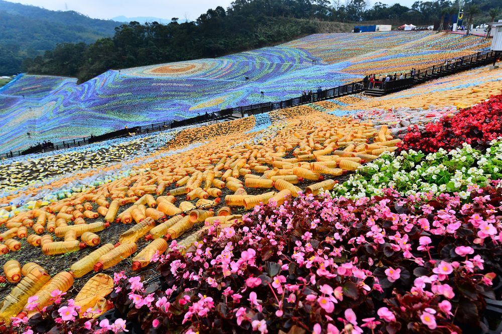
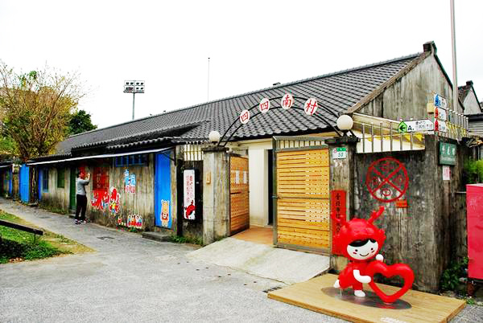
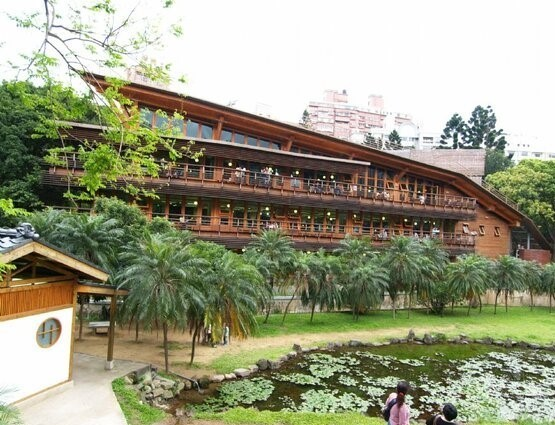
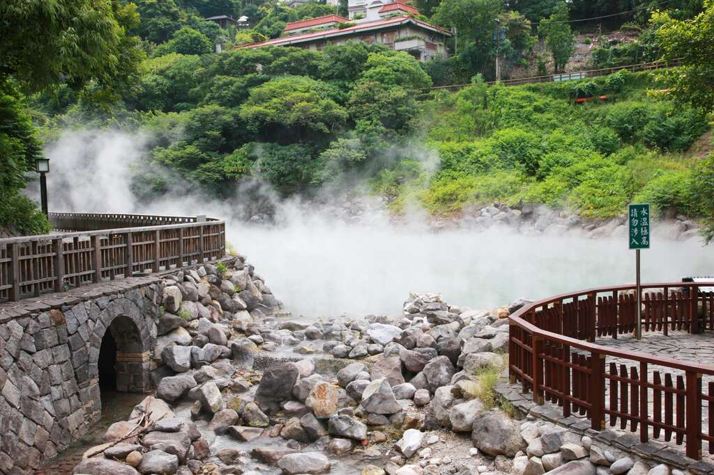
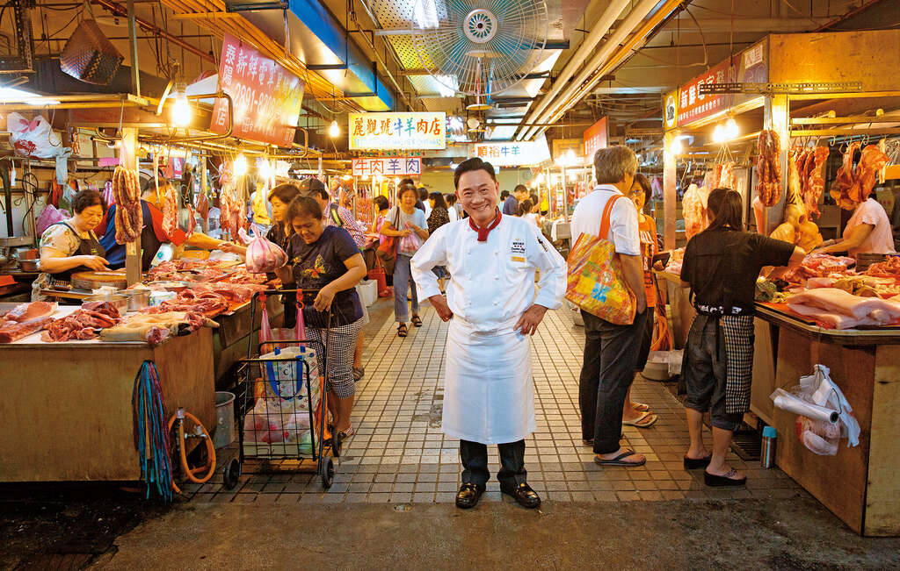
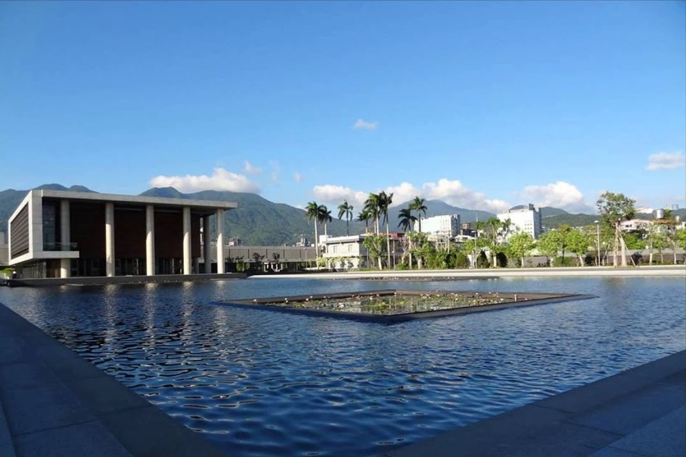

星空草原→四四南村→象山夜景→北投圖書館→地熱谷→北投市場→水月道場→泡湯
星空草原
2016年開幕的星空草原，重現梵谷名畫Starry Night，在草地上用近百萬個廢棄膠樽打造大型地景藝術，絕對是話題之作。今年園區大改造，將膠樽換成廢棄光碟，效果一樣突出，光碟在陽光照射下產生偏光反射，夜晚則有燈光秀。無論日頭定夜晚去都別具特色！
☞交通：行李不多的話，由桃園機場到達台北車站，即可搭火車前往八堵站再轉乘免費接駁車前往。
四四南村
眷村是早期國民政府遷台後興建的建築群。「四四南村」經過一系列整修，住宅內部被改建成文物館同展演空間，成為台灣第一個眷村古蹟。穿梭係復古風平房之間，會有種返左去50年代的感覺。
☞交通：搭乘捷運紅色線往象山方向，於台北101/世貿站落車步行約15分鐘即到達。
象山
位於市區、交通便利的象山可算觀賞台北夜景最佳地點，更是台劇《我可能不會愛你》大仁哥同又青姊約會的地方。一出捷運象山站就到達象山親山步道。步道主要由階梯組成，有多條路線，其中信義路五段的登山路線最快，到山頂只需約30分鐘，沿途有好多觀景平台，望下景休息下，話咁快就到！
☞交通：由四四南村步行約15分鐘即到達登山口。
北投圖書館
2012年獲為「全球最美25座公立圖書館」之一，是全台灣首座綠建築圖書館，建築材料以木材為主，四周被林木包圍，相當有特色，唔睇書都可以去行下影下相，相當寫意。
地熱谷
北投溫泉源頭之一，長年彌漫硫磺煙霧，睇落似地獄，甚至有「地獄谷」之稱，是日據時代台灣八勝十二景之一。地熱谷水質屬鹽酸酸性泉，PH值約1.6，又俗稱「青磺泉」，溫泉口水溫達98℃，水溫極高。早年有民眾失足燙傷，現時設有欄杆，大家遊覽時都記得小心！
北投市場
其實除左夜市，好多人忽略左，其實市場亦有好多地道平民美食的地方！雖然環境可能唔似餐廳咁靚，但絕對可以食到最local既野！北投市場可能好多人未聽過，但絕對是極多平民小食的聚集地。行到攰攰地，都差唔多食晏，就等小編同大家推薦四間市場附近必食的古早味小店啦！
矮仔財魯肉飯、黃家酸菜滷肉飯

矮仔財魯肉飯號稱全台最好食的魯肉飯，經常都大排長龍，除左好食之外，全因佢CP值極高！肥瘦均衡的手剁肉燥，加上濃郁醬汁，再配少少酸菜，一碗只需$25，即港幣6蚊雞！雖則份量不大，但加個小菜啱啱好。小菜價錢由港幣3蚊到15蚊不等，嗌多幾味都完全無負擔！
☞地址：台北市北投區新市街30號
☞營業時間：6:30AM-1:30PM，逢周一公休
另外一間黃家酸菜滷肉飯則是當地人熱捧的隱藏美食，主打酸菜飯，酸酸甜甜的酸菜搭配滷肉，啱啱好解到豬肉的咸膩，簡直超開胃。唔夠飽的話，仲可以嗌多碗小菜或湯。價錢一樣好接受，細滷肉飯一樣港幣6蚊雞，大嘅港紙9蚊有找。住慣港澳，可以用咁嘅價錢食到一餐，都咪話唔幸福！
水月道場
食飽飽最啱就係散散步，促進消化。位於北投法鼓山農禪寺的水月道場，是近年新興的拍照熱點。道場由著名建築師姚仁喜設計，概念來源於聖嚴法師之言. ：「空中花，水中月」。道場建於一面大湖之上，景物倒影互相映襯，無論是朝早或夜晚去，景色都相當優美。
☞地址：台北市北投區大業路65巷89號
☞開放時間：9:00AM-4:00PM
交通：由北投市場出發的話，可搭乘302或821號公車，於大業路落車，步行4分鐘即達。
✔️放鬆好選擇 ✔️CP值超高 ✔️平價北投溫泉推推
【北投溫泉會館】京都溫泉行館


房間資訊：兩人房
房間價格：每晚價格2,100起
旅宿周邊景點：距離 北投溫泉博物館 約 0.51 公里、距離 捷運新北投站 約 0.97 公里
旅宿設施：行李寄放(免費)、停車場(免費)、早餐(免費)
【北投溫泉飯店】熱海北投溫泉飯店


房間資訊：兩人房、四人房
房間價格：每晚價格2,300起
旅宿周邊景點：距離 北投溫泉博物館 0.22 公里、捷運新北投站 0.69 公里
旅宿設施：行李寄放(免費)、早餐(免費)
 333桃園市龜山區德明路5號
333桃園市龜山區德明路5號 TEL:(03)1234-5678
TEL:(03)1234-5678 EMAIL:123456789@gmail.com
EMAIL:123456789@gmail.com